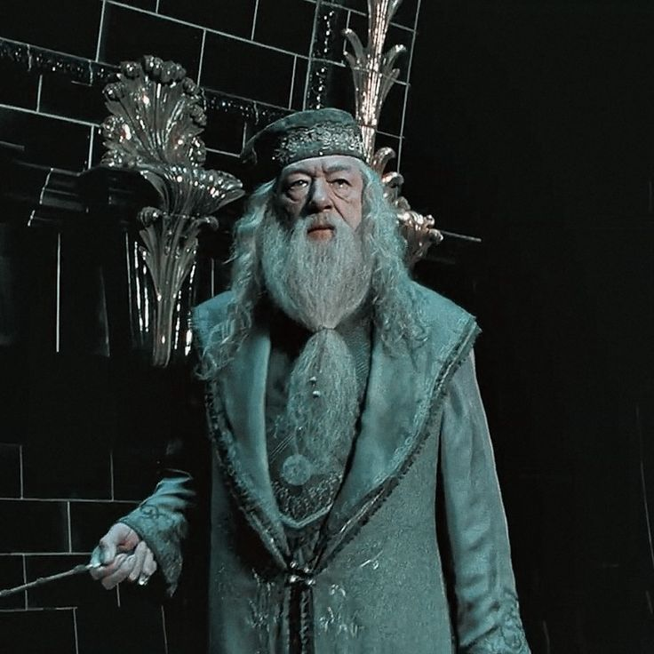
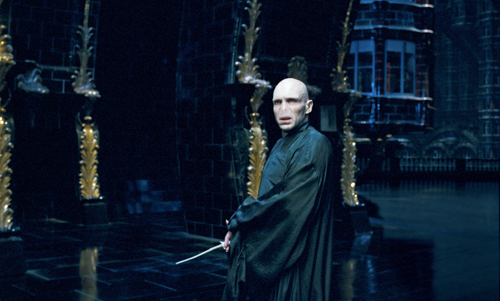

<!DOCTYPE html>
<html>
    <title>Harry Potter Characters</title>
    <meta charset="UTF-8">
    <meta name="Description" content="Working with Fonts">
    <meta name="Author" content="Cutter Thatcher">
    <meta name="viewport" content="width=device-width, initial-scale=1.0">
    <link rel="stylesheet" href="./css/fonts.css" type="text/css" />
    <link rel="stylesheet" href="./css/style.css" type="text/css" />
</html>
<body>
    <div class="main-container">
        <h1>Harry Potter Characters</h1>
        <div class="harry-container">
            
            <h3>Harry Potter</h3>
            An orphan mistreated by the Dursley family, Harry learns on his eleventh birthday that he is a wizard. Sorted into Gryffindor at Hogwarts School of Witchcraft and Wizardry, he forms close bonds with friends Ron Weasley and Hermione Granger. Known as "The Boy Who Lived," Harry survived a curse from the dark wizard Lord Voldemort as a baby, leaving him with a distinctive lightning-shaped scar. A skilled Quidditch player and courageous wizard, Harry discovers his link to Voldemort and becomes the primary target of the dark wizard's attempts to regain power. Throughout the series, Harry exemplifies bravery, loyalty, and a willingness to sacrifice for the greater good. As the chosen one, he plays a pivotal role in the battle against dark forces, showcasing significant personal growth and resilience.
        </div>
        <div class="dumbledore-container">
            
            <h3>Albus Dumbledore</h3>
            As the headmaster of Hogwarts School of Witchcraft and Wizardry, Dumbledore is a wise and powerful wizard with a deep understanding of magic. He serves as a mentor and guide to Harry Potter, aiding him in his journey against the dark wizard Lord Voldemort. Known for his eccentricities, including his love for sweets and his fondness for phoenixes, Dumbledore is a highly influential figure in the wizarding world. Throughout the series, it is revealed that he has a complicated past, including a friendship with the dark wizard Grindelwald. Dumbledore is characterized by his commitment to the greater good, his belief in the power of love, and his strategic approach to combating evil. His ultimate sacrifice and the revelation of his vulnerabilities contribute to the depth and nuance of his character, making him one of the most memorable figures in the Harry Potter universe.
        </div>
        <div class="voldemort-container">
            
            <h3>Lord Voldemort</h3>
            A dark and powerful wizard, Voldemort seeks to establish a pure-blood wizarding hierarchy and achieve immortality through dark magic. He instigates a reign of terror by amassing followers, known as Death Eaters, and attempts to conquer the wizarding world. Voldemort's rise to power stems from his obsession with magical supremacy and his desire to eliminate those who do not conform to his vision. His ultimate goal is to conquer death and become the undisputed ruler of the magical realm. Voldemort is characterized by his ruthlessness, lack of empathy, and a deep-seated fear of mortality. The series delves into his complex backstory, including his troubled childhood at an orphanage and his dark alliance with Horcruxes, objects containing fragments of his soul that anchor him to immortality. As Harry Potter's arch-nemesis, Voldemort is the embodiment of evil in the wizarding world, creating a formidable and chilling adversary throughout the narrative.
        </div>
    </div>
</body>